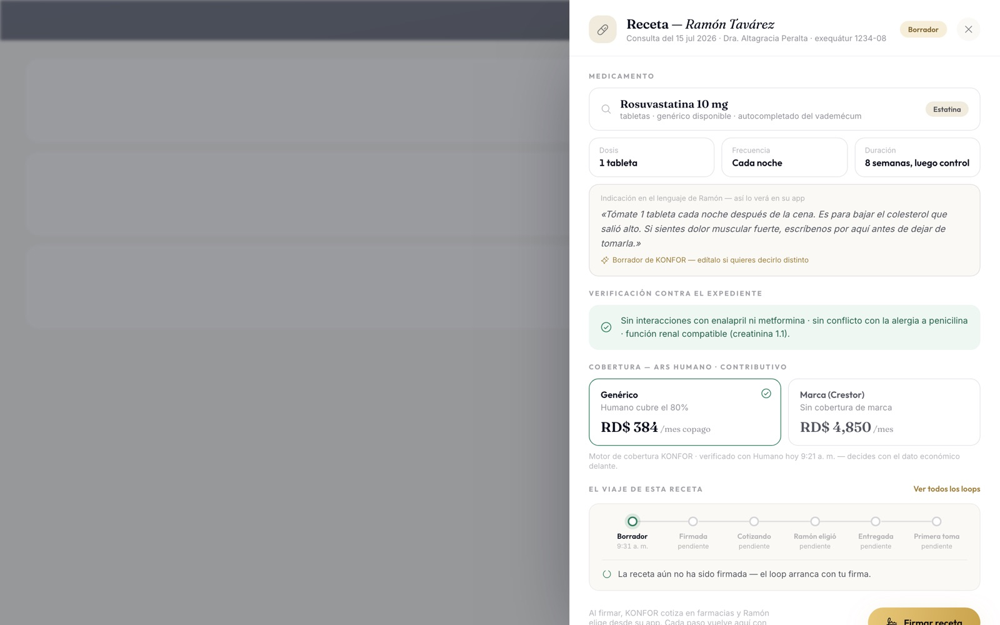
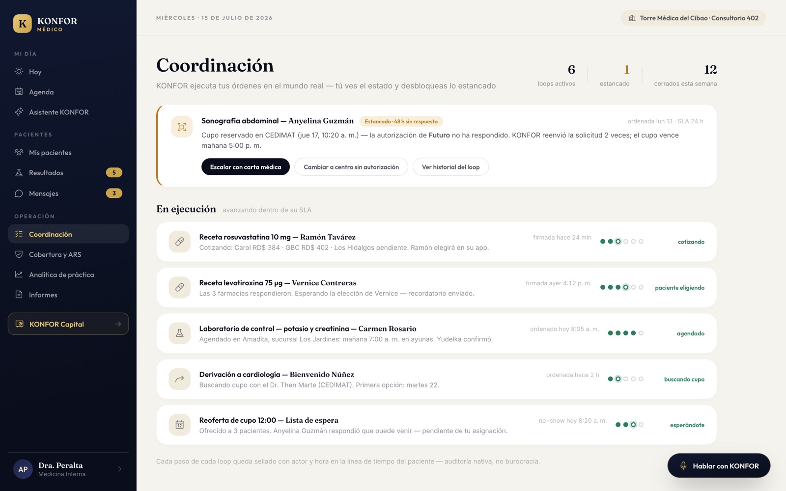
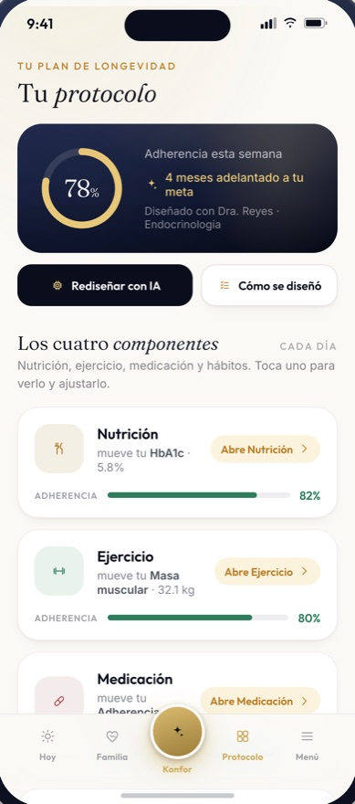
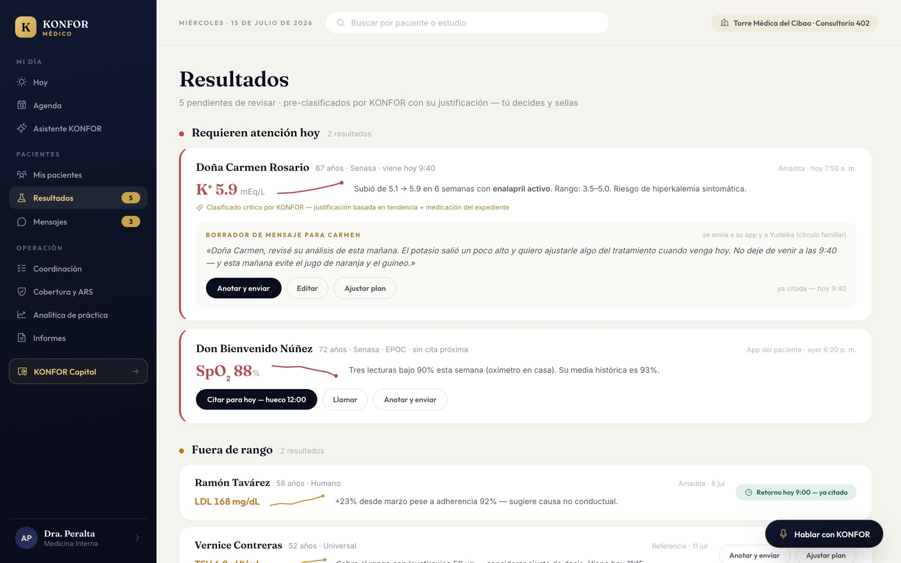
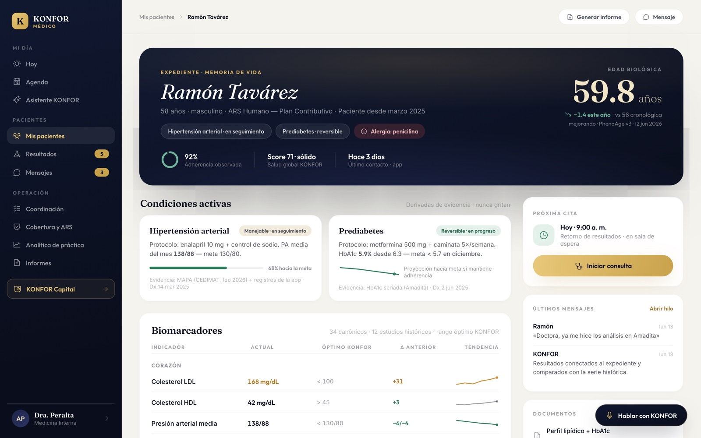

Red de prestadores
Usted indica. Nosotros verificamos que se cumplió.
La indicación que sale de su consulta no se queda en un papel. Se ejecuta, se registra y vuelve a usted con evidencia.
El bucle
Cuatro pasos que hoy nadie cierra.
Entre lo que usted indica y lo que el paciente realmente hace hay un hueco. Ese hueco es el motor de coordinación.
1
Usted prescribe.
Firma la receta en su consulta, como siempre. El resto empieza solo.

2
Nosotros lo ejecutamos.
Se cotiza en farmacia, se agenda el estudio, se gestiona la autorización con la ARS. Usted ve el estado de cada loop y desbloquea lo que se estanca.

3
El paciente lo vive.
Su indicación aparece en la app como acciones concretas del día, con hora y recordatorio. No como un PDF que nadie abre.

4
Vuelve a usted como evidencia.
Adherencia observada —no reportada—, resultados y una línea de tiempo que no se puede alterar.

Lo que recupera
Adherencia observada, no reportada.
Hoy usted pregunta «¿se está tomando la pastilla?» y recibe la respuesta que el paciente cree correcta. Con el bucle cerrado, la respuesta es un registro con hora.
Toda acción clínica queda sellada con actor y marca de tiempo, y la línea de tiempo del paciente es de solo-agregado: nada se edita hacia atrás.
Trazabilidad e interoperabilidad son requisitos del estándar, no funciones opcionales.

Cómo se integra
No le cambiamos la consulta.
Conversación con el equipo clínico
Entendemos su práctica y qué parte del bucle le hace falta.
Alta en la red
Su perfil, su centro y sus pacientes en KONFOR. Sin migrar nada.
Primer paciente
Se empieza con uno. El bucle se ve cerrado antes de escalar.